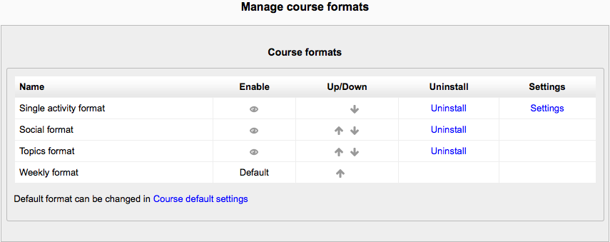

A course format refers to the layout of a course. The course format can be selected in Administration > Course administration > Edit settings.
An administrator can enable, disable or delete course formats for courses in Administration > Site administration > Plugins > Course formats > Manage course formats. They can also change the order in which available course formats are displayed to teachers in the course settings.
The course is organized week by week, with a clear start date and a finish date. Moodle will create a section for each week of your course. You can add content, forums, quizzes, and so on in the section for each week.
TIP: If you want all your students to work on the same materials at the same time, this would be a good format to choose.
NOTE: Make sure your course start date is correct. If it is not your weeks will have the wrong date on it. This is especially important if you are restoring a course to use with a new section of students.
The course is organised into topic sections that a teacher can give titles to. Each topic section consists of activities, resources and labels.
TIP: This is great to use if your course is objective based and each objective may take different amounts of time to complete. An example of this would be scaffolding where the students are building upon the knowledge from earlier topics. “Show only one section”
With the Weekly, Topics and any contributed format that implements the functionalty, it is possible via Administration > Course administration > Edit settings to “show one section per page”.
Notes:
- The course home page shows just the section names and any text in the section description along with activity and resource numbers, with the names being click-able.
- If editing is ON, then the Main course page will display all the content in all the sections.
- There is a ‘Jump to...’ menu at the bottom of each single section page.
The single activity format only has 1 section, and allows the teacher to add one activity only to the course. When the single activity format is selected, a drop down menu appears for the teacher to choose the activity they wish to use.
Note: This course format replaces the SCORM format in earlier versions of Moodle, as it is possible here to select a SCORM package as the single activity.
Single activity format with a forum as the activity and social format are very similar. The only difference is when the course contains other activities. The single activity format displays them as “orphaned” and for teachers only; the social format displays them in an activities block and available for students.
Social format¶
This format is oriented around one main forum, the social forum, which appears listed on the main page. It is useful for situations that are more free form. They may not even be courses.
The social forum can be edited by clicking the ‘Update this forum’ button on the social forum page. The forum introduction is displayed at the top of the course page.